大佬出的思考题(关于JavaScript变量环境)，做了之后感觉对之前学习的东西有了一个很好的运用练习，所以在此重新整理下。
思考题1
问题是判断下列代码的输出：
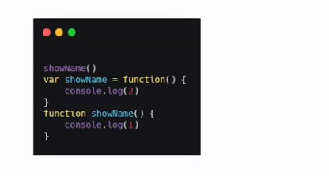
首先编译阶段，JS引擎构建全局上下文，第一个var showName变量提升，并附加默认值undefined,接下来提升函数showName，并因为重名覆盖原来的showName=undefined
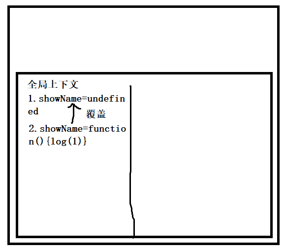
接着执行js代码,调用showName函数，输出1,接着给showName赋值，变为打印2。
所以控制台最后输出1.
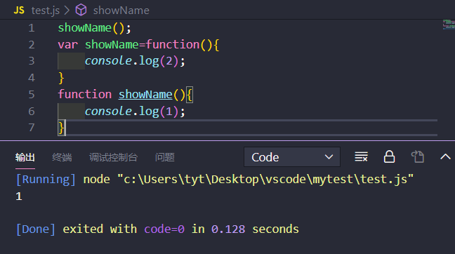
思考题2
问题是优化以下代码：
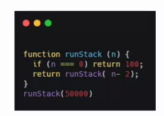
由题目中的代码可以看出程序运行的情况：
函数不断地调用自身，同时也在不断地开辟栈空间用来保存自身上下文环境，从而保存当前函数运行的数据状态，那么栈空间会被迅速占满，从而发生栈溢出，程序出现错误。
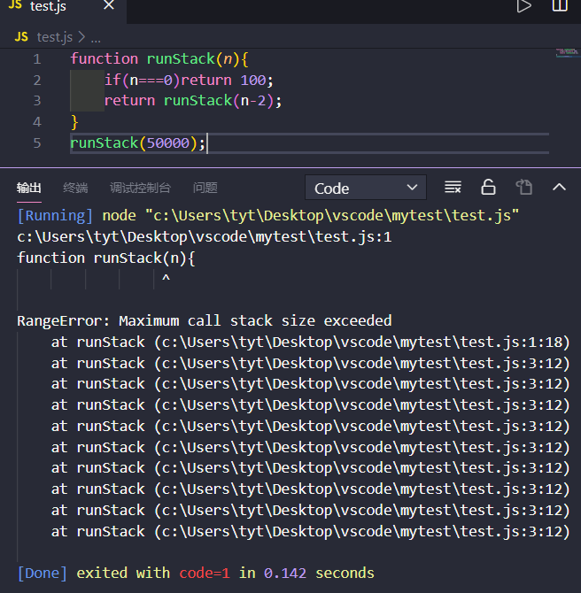
递归算法可以是代码更容易读懂，但递归总可以用循环代替，而循环不会创建函数上下文空间保存数据，在栈上占用一段空间，并不断地对上面的数据进行运算，就不会造成栈溢出。
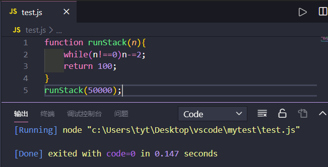
思考题3
判断下列代码的输出:
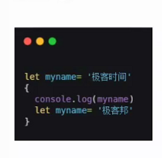
首先构建全局上下文, myname这个名称会被注册,但没有初始化
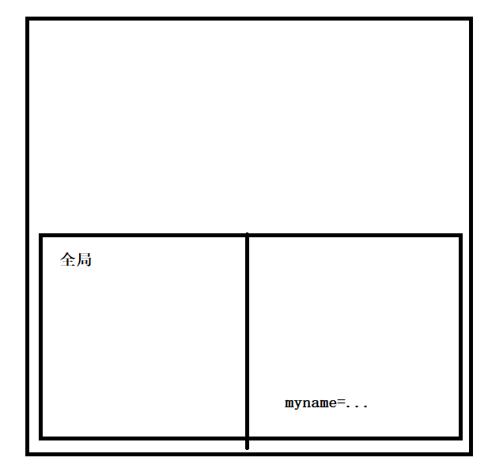
注意点：1. var 变量存在变量提升，无视块级作用域并且在顶层注册变量且初始化为undefined。2.** let变量在块级作用域中顶层注册变量且初始化为undefined，但此时无法访问此变量，因为let变量存在一个暂时死区 temporal dead zone**。
执行代码第一行，初始化var变量
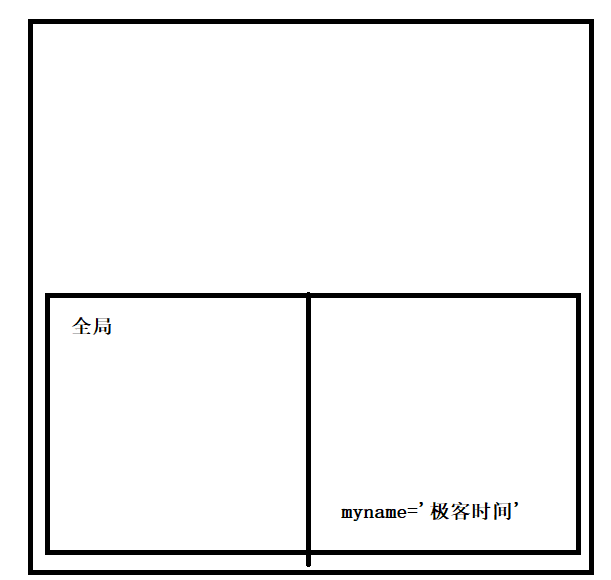
进入块级作用域，并对let 变量注册
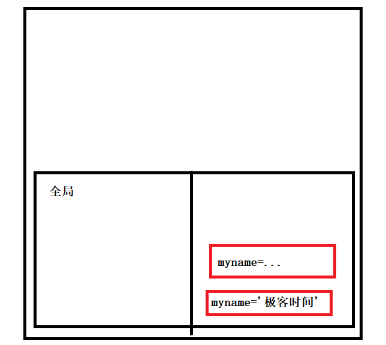
此时要输出myname，let变量寻找会形成如下图的寻找方式，一旦找到就立刻返回
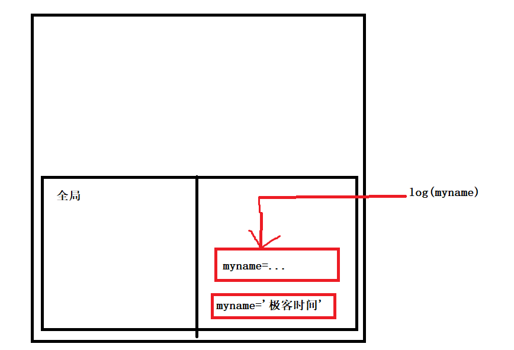
找到myname变量，但因为myname是let变量，处于暂时死区，无法访问
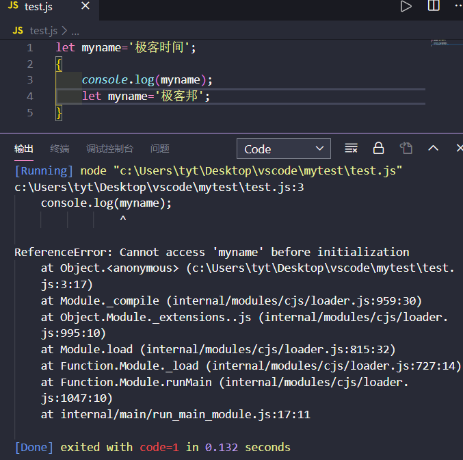
思考题4
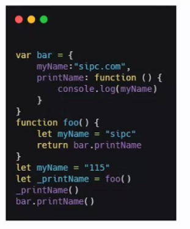
首先构造上下文
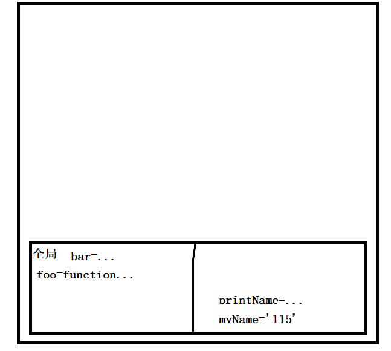
然后调用foo函数，构造foo的上下文
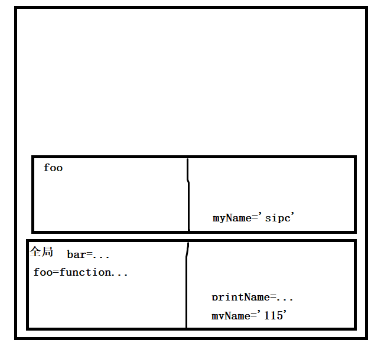
又调用bar.printName函数，构建其上下文，执行代码，寻找myName变量，因为bar.printName函数上下文中很明显没有myName，根据作用域链到外层寻找，且因为bar.printName函数的词法环境位于全局上下文中，则作用域链指向全局上下文，于是在全局中寻找myName，则输出115,之后又直接执行bar.printName函数，结果也一样输出115。如下图:
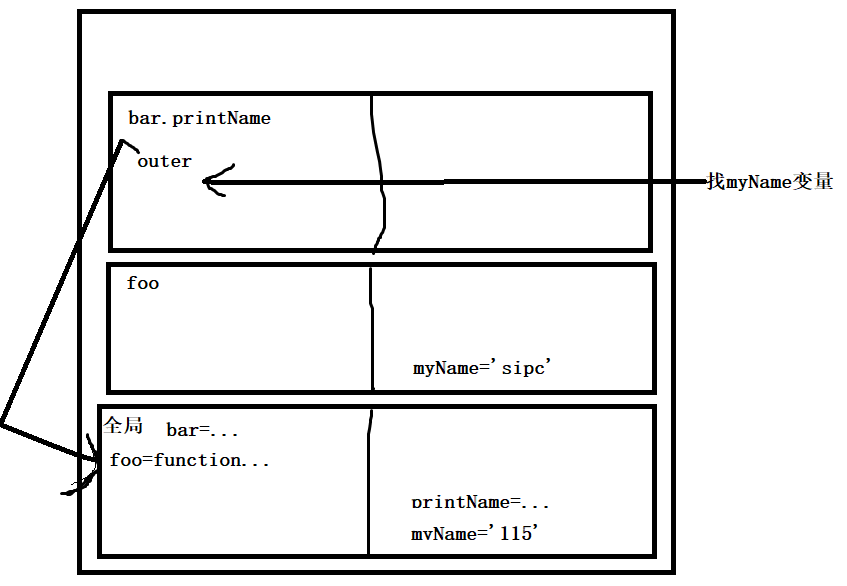
代码运行结果
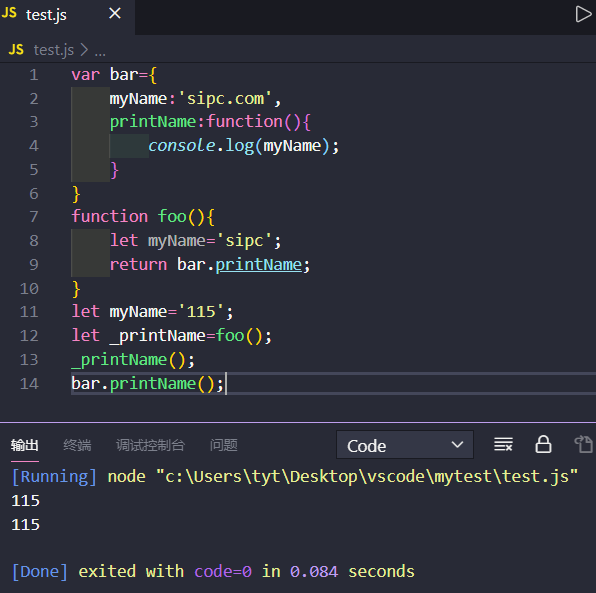
由于输出的是115，foo函数调用完成之后并没有保存内部的任何变量，会直接弹出栈，所以这个代码没有形成闭包
思考题5
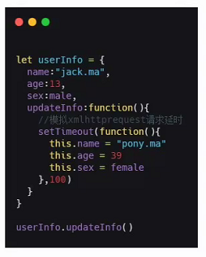
修改此代码，使之可以更新对象数据
首先运行代码，输出对象，意料之中没有更新对象
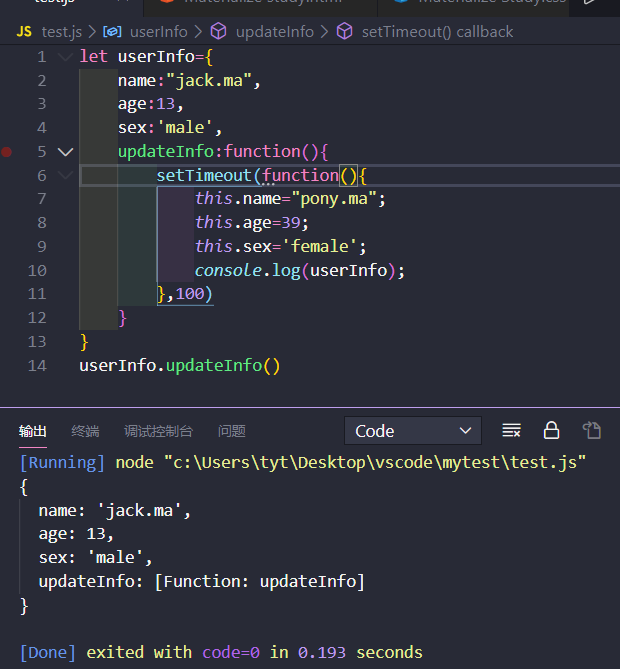
这里问题就处在this的使用上，由于明显发生了函数嵌套，而函数嵌套的this不会继承，那么它会指向全局对象Window(非严格模式)，解决方式一般有两个
改为箭头函数
setTimeout(()=>{
this.name="pony.ma";
this.age=39;
this.sex='female'
},100)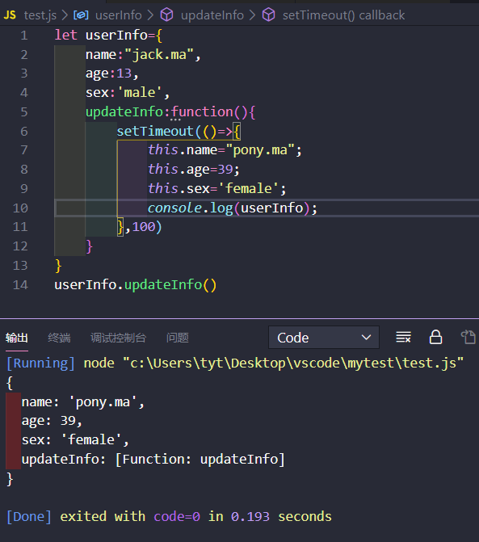
提前保存上一级的this
updataInfo:function(){
self=this;
setTimeout(.......)
}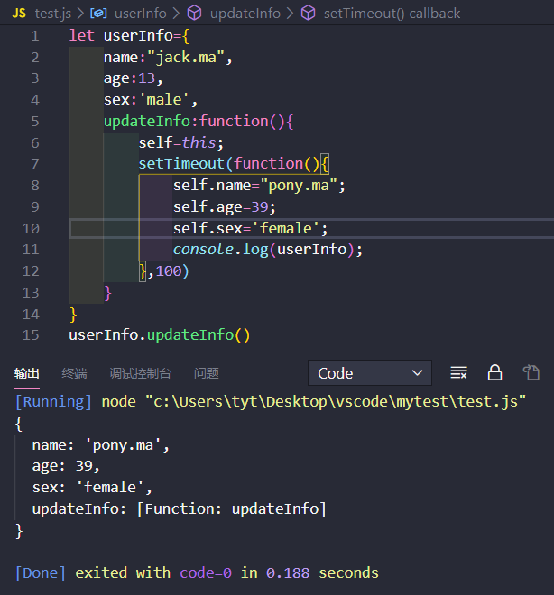